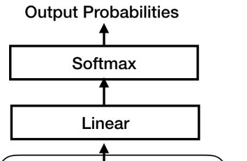

import torch
import torch.nn as nn
from transformers import AutoTokenizer
from datasets import load_dataset
import math
from einops import rearrange # einstein operationBasic Class
Trong phần này, chúng ta sẽ không giới thiệu bất kỳ kiến thức mới nào. Thay vào đó, chúng ta sẽ tái cấu trúc lại mã code từ chương trước bằng cách sử dụng các class để tạo cấu trúc code dễ đọc hơn và giống với LLAMA2 hơn.
Lý do tôi chia chương này thành một phần riêng là:
Thứ nhất, việc đọc chương này có thể giúp chúng ta củng cố kiến thức đã học và tạo sự tự tin hơn.
Thứ hai, đối với những người không quá quen thuộc với việc sử dụng class trong lập trình, việc này có thể giúp họ dễ dàng hơn khi làm quen với khái niệm này.
Trong chương này, tôi sẽ không giải thích nhiều vì như tôi đã nói, chúng ta không đưa thêm kiến thức mới nào vào đây. Bạn chỉ cần sao chép mã code ở đây và thử thực hiện, bạn sẽ thấy nó tương tự với các đoạn code ở chương trước.
sample = 20
dataset = load_dataset("roneneldan/TinyStories")
tokenizer = AutoTokenizer.from_pretrained("EleutherAI/gpt-neo-125M")
tokenizer.pad_token = tokenizer.eos_token
subset_dataset = dataset['train'][:sample]['text']
tokenized_dataset = tokenizer(
subset_dataset,
return_tensors='pt',
padding=True, # Enable padding
truncation=True # Enable truncation
)
data = tokenized_dataset['input_ids']
data.shapeRepo card metadata block was not found. Setting CardData to empty.torch.Size([20, 219])class ModelArgs:
def __init__(self, sequence_len, vocab_size):
self.batch_size = 16
self.n_head = 4
self.n_embd = 36
self.sequence_len = sequence_len
self.vocab_size = vocab_size
sequence_len = data.size(1) - 1
vocab_size = tokenizer.vocab_size
args = ModelArgs(sequence_len, vocab_size)def get_batch(data, batch_size):
idx = torch.randint(0, len(data), size=(batch_size,))
batch = data[idx]
xb = batch[:, :-1].contiguous()
yb = batch[:, 1:].contiguous()
return xb, yb
xb, yb = get_batch(data, args.batch_size)
xb.shape, yb.shape(torch.Size([16, 218]), torch.Size([16, 218]))Embedding
class Embedding(nn.Module):
def __init__(self, args:ModelArgs):
super().__init__()
self.sequence_len = args.sequence_len
self.wte = nn.Embedding(args.vocab_size, args.n_embd)
self.position = nn.Embedding(args.sequence_len, args.n_embd)
def forward(self, input_ids):
token_embd = self.wte(input_ids)
position_embd = self.position(torch.arange(self.sequence_len))
input_ids_embd = token_embd + position_embd
return input_ids_embdembd = Embedding(args)
x_embd = embd(xb)
x_embd.shapetorch.Size([16, 218, 36])Self Attention
class Attention(nn.Module):
def __init__(self, args:ModelArgs):
super().__init__()
self.head_dim = args.n_embd // args.n_head
opt_size = args.n_head * self.head_dim
hidden_size = args.n_embd
self.Wqkv = nn.Linear(hidden_size, 3 * opt_size)
self.out_proj = nn.Linear(opt_size, hidden_size)
def forward(self, input_ids_embd_norm):
seq_len = input_ids_embd_norm.shape[1]
qkv = self.Wqkv(input_ids_embd_norm)
qkv = rearrange(qkv, 'b t (three h d) -> b t three h d', three=3, d=self.head_dim)
q, k, v = qkv.unbind(2)
softmax_scale = 1.0 / math.sqrt(q.shape[-1])
scores = torch.einsum("bthd, bshd -> bhts", q, k * softmax_scale)
mask = torch.triu(torch.full((seq_len, seq_len), -10000), 1)
scores += mask
attention_weights = torch.softmax(scores, dim=-1)
output = torch.einsum("bhts, bshd -> bthd", attention_weights, v)
output = rearrange(output, "... h d -> ... (h d)")
attn_out = self.out_proj(output)
return attn_out# Normalize
attn_norm = nn.LayerNorm(args.n_embd)
x_embd_norm = attn_norm(x_embd)
attn = Attention(args)
attn_out = attn(x_embd_norm)
# add residual
attn_out += x_embd
attn_out.shapetorch.Size([16, 218, 36])Feed Forward
class FeedForward(nn.Module):
def __init__(self, args:ModelArgs):
super().__init__()
hidden_size = 4 * args.n_embd
self.fc1 = nn.Linear(args.n_embd, hidden_size)
self.fc2 = nn.Linear(hidden_size, args.n_embd)
self.act = nn.ReLU()
def forward(self, attn_out_norm):
hidden_states = self.fc1(attn_out_norm)
hidden_states = self.act(hidden_states)
ffwd_out = self.fc2(hidden_states)
return ffwd_out# Normalize
ffwd_norm = nn.LayerNorm(args.n_embd)
attn_out_norm = ffwd_norm(attn_out)
ffwd = FeedForward(args)
ffwd_out = ffwd(attn_out_norm)
# add residual
ffwd_out += attn_out
ffwd_out.shapetorch.Size([16, 218, 36])Transfomer Block

class TransfomerBlock(nn.Module):
def __init__(self, args:ModelArgs):
super().__init__()
self.attention_norm = nn.LayerNorm(args.n_embd)
self.ffwd_norm = nn.LayerNorm(args.n_embd)
self.attn = Attention(args)
self.ffwd = FeedForward(args)
def forward(self, input_ids_embd):
attn_out = input_ids_embd + self.attn(self.attention_norm(input_ids_embd))
ffwd_out = attn_out + self.ffwd(self.ffwd_norm(attn_out))
return ffwd_outt_block = TransfomerBlock(args)
ffwd_out = t_block(x_embd)
ffwd_out.shapetorch.Size([16, 218, 36])Transformer

class TransformerHead(nn.Module):
def __init__(self, args:ModelArgs):
super().__init__()
self.norm = nn.LayerNorm(args.n_embd)
self.linear = nn.Linear(args.n_embd, args.vocab_size)
def forward(self, ffwd_out):
ffwd_out_norm = self.norm(ffwd_out)
logits = self.linear(ffwd_out_norm)
return logits
t_head = TransformerHead(args)
logits = t_head(ffwd_out)
logits.shapetorch.Size([16, 218, 50257])class TransformerSequential(nn.Module):
def __init__(self, args:ModelArgs):
super().__init__()
n_layer = 2
modules = [Embedding(args)]
modules += [TransfomerBlock(args) for _ in range(n_layer)]
modules.append(TransformerHead(args))
self.layers = nn.Sequential(*modules)
def forward(self, input_ids):
logits = self.layers(input_ids)
return logitsmodel = TransformerSequential(args)
logits = model(xb)
logits.shapetorch.Size([16, 218, 50257])Loss
class TransformerLoss(nn.Module):
def __init__(self):
super().__init__()
self.loss_fct = nn.CrossEntropyLoss()
def forward(self, logits, labels):
logits = logits.view(-1, logits.shape[-1])
labels = labels.view(-1)
loss = self.loss_fct(logits, labels)
return losst_loss = TransformerLoss()
loss = t_loss(logits, yb)
losstensor(11.0337, grad_fn=<NllLossBackward0>)data = tokenized_dataset['input_ids']
sequence_len = data.size(1) - 1
vocab_size = tokenizer.vocab_size
args = ModelArgs(sequence_len, vocab_size)
xb, yb = get_batch(data, args.batch_size)
model = TransformerSequential(args)
logits = model(xb)
t_loss = TransformerLoss()
loss = t_loss(logits, yb)
losstensor(11.1727, grad_fn=<NllLossBackward0>)Chúng ta đã hoàn thành được cái cơ bản, ‘backbone’ của kiến trúc transformer trong LLAMA2 rồi. Bây giờ hãy chuyển sang chương tiếp theo và khám phá sâu hơn về kiến trúc thực sự của LLAMA2 nhé.